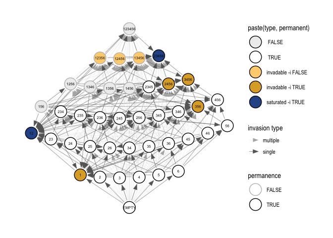

The goal of invasiongraph is to compute the potential community assembly pathways for a community of interacting species. The core functions in this package come from the R code archive that accompanies:
Hofbauer, J., Schreiber, S.J. (2022) Permanence via invasion graphs: incorporating community assembly into modern coexistence theory. J. Math. Biol. 85:54. https://doi.org/10.1007/s00285-022-01815-2
In addition to the more accessible format of an R package, we have added:
- Checks and informative error messages
- Grammar of Graphics plotting via
tidygraphandggraph - (planned) Dedicated object classes
- (planned) Support for uncertainty propagation
Installation
You can install the development version of invasiongraph from GitHub with:
# install.packages("remotes")
remotes::install_github("DICELab-NCSU/invasiongraph")Core functionality
Calculate invasion schemes and graphs
# compute the invasion scheme
sch <- inv_scheme(A, r)
# calculate the invasion graph
gra <- inv_graph(IS = sch)Visualize invasion graphs
# tidy invasion graph to prepare for plotting
tidy_gra <- tidy_inv_graph(gra)
# plot
ggIG(tidy_gra, node_size = 8, edge_width = c(0.05, 0.2))
Distinguishing invasion graphs
The edges that differentiate candidate invasion graphs may be easily identified for a small number of candidates for a pool with low species richness. This task quickly becomes unfeasible as the number of candidate invasion graphs or the size of the species pool grows.
# generate candidate invasion graphs for the same species pool
set.seed(9823)
n <- 3 # set number of species
As <- replicate(5, -diag(n) - 1.5 * matrix(runif(n^2), n, n), simplify = FALSE)
r <- matrix(1, n, 1)
schs <- lapply(As, inv_scheme, r)
gras <- lapply(schs, inv_graph)
# homogenize the nodes across a set of candidate invasion graphs
(pgras <- pad_adj_mats(gras))
#> [[1]]
#> 1 2 3 1,2 2,3 1,3 1,2,3
#> 0 1 1 1 1 1 0 0
#> 1 0 0 0 1 1 1 0 0
#> 2 0 0 0 0 1 1 0 0
#> 3 0 0 0 0 0 1 0 0
#> 1,2 0 0 0 0 0 1 0 0
#> 2,3 0 0 0 0 0 0 0 0
#> 1,3 0 0 0 0 0 0 0 0
#> 1,2,3 0 0 0 0 0 0 0 0
#>
#> [[2]]
#> 1 2 3 1,2 2,3 1,3 1,2,3
#> 0 1 1 1 0 1 1 0
#> 1 0 0 0 0 0 0 1 0
#> 2 0 1 0 0 0 1 1 0
#> 3 0 0 0 0 0 1 1 0
#> 1,2 0 0 0 0 0 0 0 0
#> 2,3 0 0 0 0 0 0 1 0
#> 1,3 0 0 0 0 0 0 0 0
#> 1,2,3 0 0 0 0 0 0 0 0
#>
#> [[3]]
#> 1 2 3 1,2 2,3 1,3 1,2,3
#> 0 1 1 1 1 1 1 1
#> 1 0 0 0 0 1 0 1 1
#> 2 0 0 0 0 1 1 0 1
#> 3 0 0 0 0 0 1 1 1
#> 1,2 0 0 0 0 0 0 0 1
#> 2,3 0 0 0 0 0 0 0 1
#> 1,3 0 0 0 0 0 0 0 1
#> 1,2,3 0 0 0 0 0 0 0 0
#>
#> [[4]]
#> 1 2 3 1,2 2,3 1,3 1,2,3
#> 0 1 1 1 1 1 1 1
#> 1 0 0 0 0 1 0 1 1
#> 2 0 0 0 0 1 1 0 1
#> 3 0 0 0 0 0 1 1 1
#> 1,2 0 0 0 0 0 0 0 1
#> 2,3 0 0 0 0 0 0 0 1
#> 1,3 0 0 0 0 0 0 0 1
#> 1,2,3 0 0 0 0 0 0 0 0
#>
#> [[5]]
#> 1 2 3 1,2 2,3 1,3 1,2,3
#> 0 1 1 1 1 1 1 0
#> 1 0 0 0 0 1 0 1 0
#> 2 0 0 0 0 1 1 0 0
#> 3 0 0 0 0 1 1 1 0
#> 1,2 0 0 0 0 0 0 0 0
#> 2,3 0 0 0 0 1 0 0 0
#> 1,3 0 0 0 0 1 0 0 0
#> 1,2,3 0 0 0 0 0 0 0 0
# prepare a binary character matrix for the presence of edges
adj2char(pgras)
#> -> 1-> 2-> 3-> 1,2-> 2,3-> 1,3-> 1,2,3-> ->1 1->1 2->1 3->1 1,2->1 2,3->1
#> IG1 0 0 0 0 0 0 0 0 1 0 0 0 0 0
#> IG2 0 0 0 0 0 0 0 0 1 0 1 0 0 0
#> IG3 0 0 0 0 0 0 0 0 1 0 0 0 0 0
#> IG4 0 0 0 0 0 0 0 0 1 0 0 0 0 0
#> IG5 0 0 0 0 0 0 0 0 1 0 0 0 0 0
#> 1,3->1 1,2,3->1 ->2 1->2 2->2 3->2 1,2->2 2,3->2 1,3->2 1,2,3->2 ->3 1->3
#> IG1 0 0 1 0 0 0 0 0 0 0 1 1
#> IG2 0 0 1 0 0 0 0 0 0 0 1 0
#> IG3 0 0 1 0 0 0 0 0 0 0 1 0
#> IG4 0 0 1 0 0 0 0 0 0 0 1 0
#> IG5 0 0 1 0 0 0 0 0 0 0 1 0
#> 2->3 3->3 1,2->3 2,3->3 1,3->3 1,2,3->3 ->1,2 1->1,2 2->1,2 3->1,2 1,2->1,2
#> IG1 0 0 0 0 0 0 1 1 1 0 0
#> IG2 0 0 0 0 0 0 0 0 0 0 0
#> IG3 0 0 0 0 0 0 1 1 1 0 0
#> IG4 0 0 0 0 0 0 1 1 1 0 0
#> IG5 0 0 0 0 0 0 1 1 1 1 0
#> 2,3->1,2 1,3->1,2 1,2,3->1,2 ->2,3 1->2,3 2->2,3 3->2,3 1,2->2,3 2,3->2,3
#> IG1 0 0 0 1 1 1 1 1 0
#> IG2 0 0 0 1 0 1 1 0 0
#> IG3 0 0 0 1 0 1 1 0 0
#> IG4 0 0 0 1 0 1 1 0 0
#> IG5 1 1 0 1 0 1 1 0 0
#> 1,3->2,3 1,2,3->2,3 ->1,3 1->1,3 2->1,3 3->1,3 1,2->1,3 2,3->1,3 1,3->1,3
#> IG1 0 0 0 0 0 0 0 0 0
#> IG2 0 0 1 1 1 1 0 1 0
#> IG3 0 0 1 1 0 1 0 0 0
#> IG4 0 0 1 1 0 1 0 0 0
#> IG5 0 0 1 1 0 1 0 0 0
#> 1,2,3->1,3 ->1,2,3 1->1,2,3 2->1,2,3 3->1,2,3 1,2->1,2,3 2,3->1,2,3
#> IG1 0 0 0 0 0 0 0
#> IG2 0 0 0 0 0 0 0
#> IG3 0 1 1 1 1 1 1
#> IG4 0 1 1 1 1 1 1
#> IG5 0 0 0 0 0 0 0
#> 1,3->1,2,3 1,2,3->1,2,3
#> IG1 0 0
#> IG2 0 0
#> IG3 1 0
#> IG4 1 0
#> IG5 0 0
# cluster candidate invasion graphs, determine the edges that
# distinguish clusters
# TODO